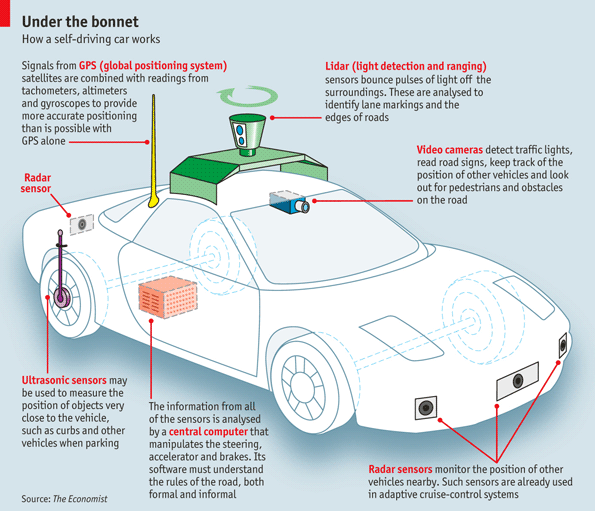

Autonomous cars use a variety of techniques to detect their surroundings, such as radar, laser light, GPS, odometry and computer vision.
Advanced control systems interpret sensory information to identify decent navigation paths, as well as obstacles and relevant traffic signs.
Autonomous cars must have control systems that are capable of analyzing sensory data to distinguish between different cars on the road.
Modern self-driving cars generally use Bayesian Simultaneous localization and mapping (SLAM) algorithms, which fuse data from multiple sensors
and an off-line map into current location estimatess and map updates.
SLAM with detection and tracking of other moving objects (DATMO), which also handles things such as cars and pedestrians, is a variant being developed at Google.
Simpler systems may use roadside real-time locating system (RTLS) beacon systems to aid localisation.
Typical sensors include stereo vision, GPS and IMU. Visual object recognition uses machine vision including neural networks.
